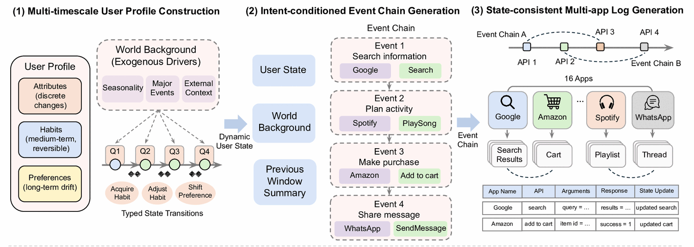
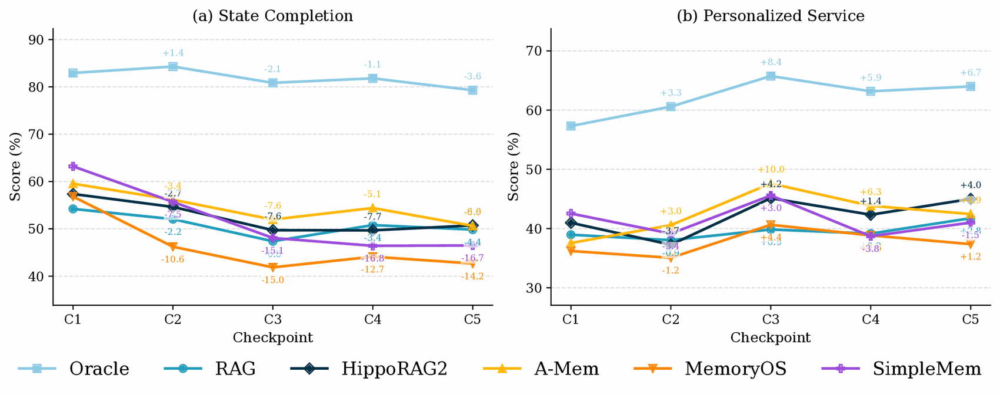
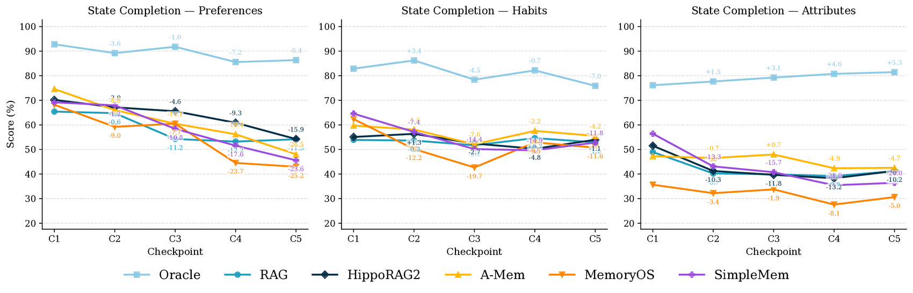
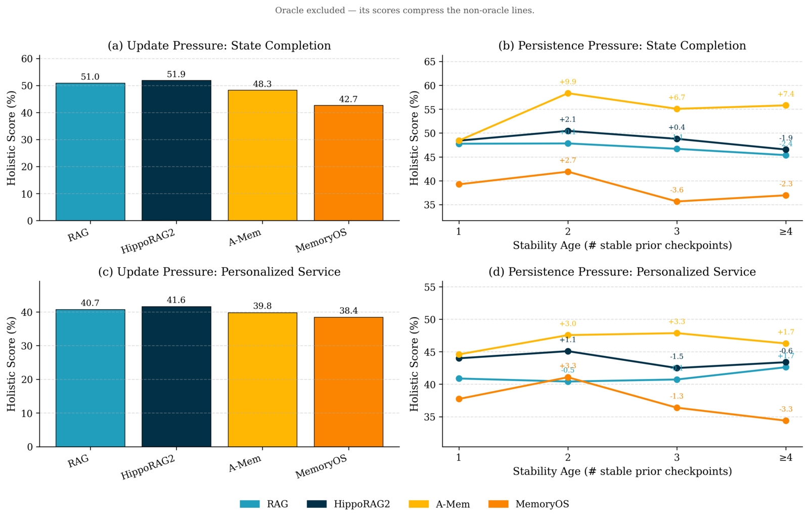
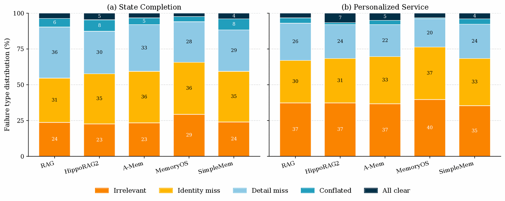

Can memory systems track who a user is, what they do, and what they prefer — and keep it current — across months of multi-app activity?
Under review
NeurIPS 2026 (under review)

LLM agents increasingly act as personal assistants that must remember a user's profile over months — who they are (attributes), what they routinely do (habits), and what they prefer (preferences) — and keep it updated as jobs, routines, and tastes drift. Existing benchmarks evaluate this "memory" through short, simplified interactions, missing three core properties of real long-horizon behavior: a user's profile is heterogeneous (attributes, habits, and preferences evolve on different timelines); its changes are causally driven by external context such as life events; and its evidence is scattered across many small actions in different apps rather than stated explicitly.
We introduce DynamicMem, a synthetic benchmark that constructs 15 months of activity for each user — the kind of long-term, multi-app data that real users' privacy keeps out of reach. It provides user-consistent trajectories averaging 2.2M tokens and 1,772 grounded events per user across 16 applications, with profiles that evolve under seasons and life events, and every recorded action reflecting the user's profile at that moment. We evaluate at five quarterly checkpoints to track how systems scale as history grows. Benchmarking five representative memory systems exposes problems a single accuracy score hides — detailed below.
Both are derived from the same validated ground-truth state, separating recovering state from using it.
Reconstruct the user's current profile — the attributes, habits, and preferences that hold at the checkpoint — by condensing many time-scattered app logs into a fixed schema.
Use the remembered state to complete a proactive, personalized request grounded in that state — e.g. pre-filling a setup form or drafting a context-aware reminder.
Benchmarking Oracle plus five memory systems — RAG, HippoRAG2, A-Mem, MemoryOS, and SimpleMem — at the five quarterly checkpoints C1–C5.
From C1 to C5, State Completion declines for every system (−4.4 RAG, −6.6 HippoRAG2, −8.9 A-Mem, −14.2 MemoryOS, −16.7 SimpleMem). Yet Personalized Service shows no such decay — it is higher at C5 than C1 for four of the five systems. Since both tasks read the same memory, the bottleneck is recovering state, not acting on it.

Breaking State Completion down by state family, preferences account for most of the decline (e.g. −26.5 for A-Mem from C1 to C5) and degrade steadily — they are implicit, inferred from many scattered logs that later evidence blurs. Habits stay roughly flat (recurring behavior adds redundant evidence), and attributes drop early then hold.

A falling score can mean forgetting a long-standing fact (retention) or failing to adopt a changed one (update) — distinct failures an aggregate curve hides. The same mechanism that lets a system hold a stable fact often blocks it from adopting a changed one, and the trade-off differs by family: append-only stores (RAG, HippoRAG2) adopt changes fast but forget; consolidating stores (A-Mem, SimpleMem, MemoryOS) retain but blur old and new.

Every failure is labelled by what the memory system delivered to the answer model — isolating memory failures from answer-model behaviour.

The four systems that build structure beyond raw chunks (A-Mem, HippoRAG2, MemoryOS, SimpleMem) all concentrate at 35–36% Identity Miss with Detail Miss falling to 28–33%; RAG shows the opposite balance (36% Detail Miss). Merging and summarizing preserve surrounding detail but abstract away the named anchor — and the identity-miss rate sits within a point of 35% across four very different mechanisms, suggesting it is a systemic challenge of structured memory.
MemoryOS shows the highest Irrelevant Evidence rate on both tasks (29% SC vs 23–24%; 40% PS vs 35–37%); combined with its Identity Miss, roughly two-thirds of its failures involve evidence that never pins down the user's state. Compacting many logs into a multi-level summary surfaces an abstracted view rather than the specific log a precise state query needs.
All Clear — evidence complete and unambiguous, yet the prediction still wrong — stays at just 2–7% across all ten (system, task) combinations. In other words, more than 93% of failures are bounded by what the memory system could deliver, not by what the answer model did with it. The headroom lies in memory itself.
Predictions are scored by a field-level Core+Detail LLM-as-judge. Each reference unit is
decomposed into fields; every field is scored on a binary Core axis (does the prediction
recover the field's central meaning?) and a three-level Detail axis (how completely are the
specifics preserved?), combined as s = 0.8·Core + 0.2·(Detail/2) and averaged over fields and units.
@inproceedings{dynamicmem2026,
title = {DynamicMem: A Long-Horizon Memory Benchmark in Real-World Settings},
author = {Anonymous Authors},
booktitle = {Under review at NeurIPS},
year = {2026}
}